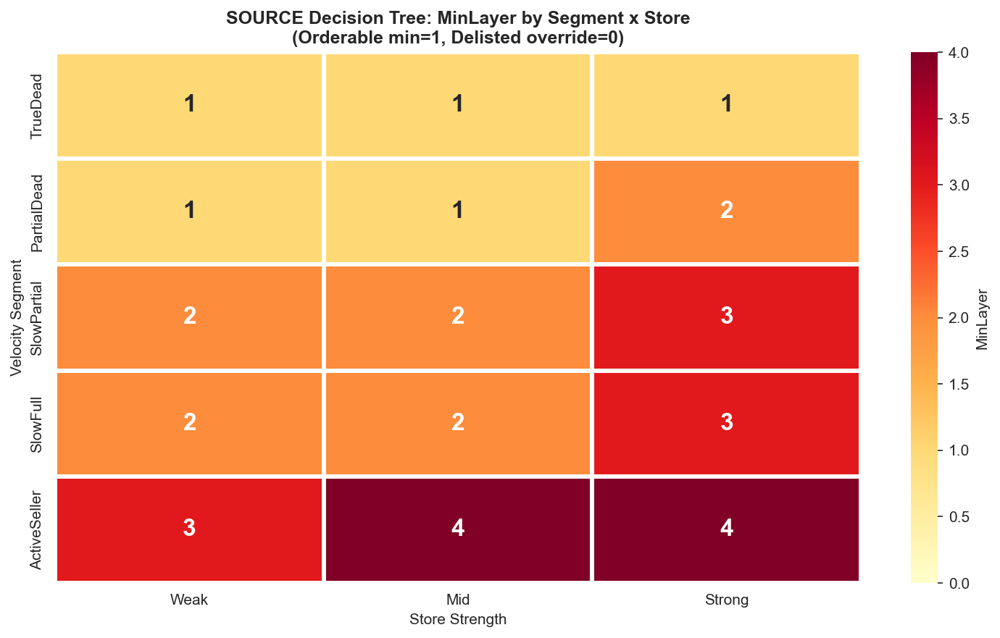
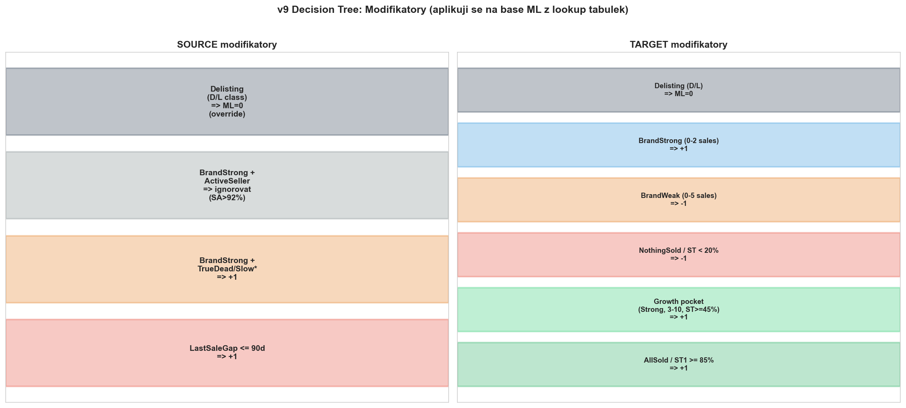
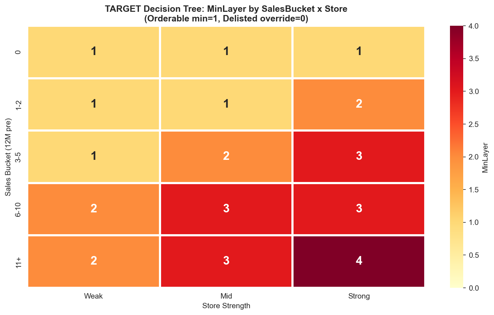
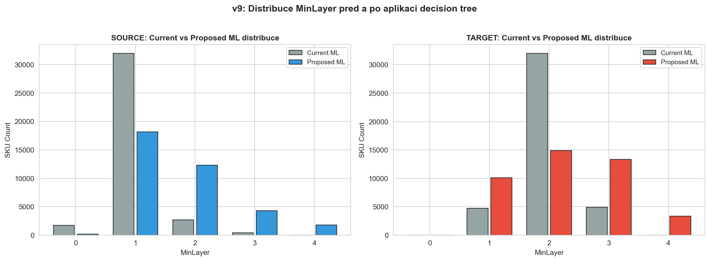

CalculationId=233 | ApplicationDate: 2025-07-13 | Generated: 2026-03-22 20:30
4 smery: source up, source down, target up, target down. ML rozsah 0-4. Orderable min=1.

| Segment | Store | MinLayer |
|---|---|---|
| TrueDead | Weak | 1 |
| TrueDead | Mid | 1 |
| TrueDead | Strong | 1 |
| PartialDead | Weak | 1 |
| PartialDead | Mid | 1 |
| PartialDead | Strong | 2 |
| SlowPartial | Weak | 2 |
| SlowPartial | Mid | 2 |
| SlowPartial | Strong | 3 |
| SlowFull | Weak | 2 |
| SlowFull | Mid | 2 |
| SlowFull | Strong | 3 |
| ActiveSeller | Weak | 3 |
| ActiveSeller | Mid | 4 |
| ActiveSeller | Strong | 4 |

| Modifikator | Podminka | Uprava |
|---|---|---|
| LastSaleGap kratky | ≤90 dni | +1 |
| BrandFit source | TrueDead/SlowFull/SlowPartial + BrandStrong | +1 |
| BrandFit source | ActiveSeller | ignorovat (sold_after >92%) |
| Delisting | SkuClass D/L | ML=0 (override) |
Final_ML = CLAMP(Base_ML + SUM(modifiers), 0, 4) Ak IsOrderable: Final_ML = MAX(Final_ML, 1) Ak IsDelisted: Final_ML = 0

| SalesBucket | Store | MinLayer |
|---|---|---|
| 0 | Weak | 1 |
| 0 | Mid | 1 |
| 0 | Strong | 1 |
| 1-2 | Weak | 1 |
| 1-2 | Mid | 1 |
| 1-2 | Strong | 2 |
| 3-5 | Weak | 1 |
| 3-5 | Mid | 2 |
| 3-5 | Strong | 3 |
| 6-10 | Weak | 2 |
| 6-10 | Mid | 3 |
| 6-10 | Strong | 3 |
| 11+ | Weak | 2 |
| 11+ | Mid | 3 |
| 11+ | Strong | 4 |
| Modifikator | Podminka | Uprava |
|---|---|---|
| AllSold / ST1 high | AllSold4M=1 OR ST1_4M >= 85% | +1 |
| Growth pocket | Strong, Sales 3-10, ST >= 45% | +1 |
| NothingSold / low ST | NothingSold4M=1 OR ST4M < 20% | -1 |
| BrandFit (0-2 sales) | BrandWeak | -1 |
| BrandFit (0-2 sales) | BrandStrong | +1 |
| BrandFit (3-5 sales) | BrandWeak | -1 |
| BrandFit (6+ sales) | — | ignorovat (predaje dominuji) |
| Delisting | SkuClass D/L | ML=0 (override) |
